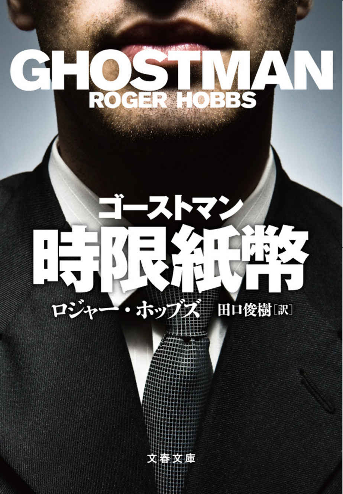

| ジャック ゴーストマンの自叙伝【文春e-Books】 | |
| ロジャー・ホッブズ | |
| 文藝春秋 (2017) | |
＊この電子書籍は縦書きでレイアウトされています。
＊読む際のご注意、お断り等についてはこちら をお読み下さい。
＊この電子書籍は、二〇一七年三月十日刊行の文春文庫『ゴーストマン 時限紙幣』より抜粋し制作しています。
ジャック ゴーストマンの自叙伝
ロジャー・ホッブズ
田口俊樹 訳
いかに私は今の名を得たか。これはそのことにまつわる話だ。長くはない。それでも読むに値するものになってくれていればと思う。話をするのが巧みなほうとはとても言えないので。
私は一九七四年一月一日、セント・ローズ・ドミニカン病院の産科病棟で生まれた。ひと月まるまる早い早産だった。が、それだけが心配しなければならないことではなかった。私の出産は世のあらゆる親の悪夢だった。まず体重が新生児の標準よりはるかに少なかった。どうにか二千グラムを超えたほどで、肌は青白く、眼はディナープレートのように大きく開かれたままだった。高く抱え上げられても泣かなかった。息をしていなかったのだ。そのため、私の出生証明書は鉛筆で書かれ、のちにきちんと書き直されることもなかった。今でもそのときのまま空欄だらけになっている。書くべきかどうか、医者としても判断がつきかねたかのように。どっちみち書くことは大してなかったわけだが。
そんなふうに生まれたのはたぶんドラッグのせいだ。妊婦が妊娠中にヘロインを打つと、ヘロインは妊娠三ヵ月という早い時期からもう胎盤関門を通じて胎児に送られる。私の母は毎日ヘロインをやっていた。私が彼女の中で育っているときでさえ。ただ、ドラッグというのは一般に想像されるほど胎児に悪影響をもたらすものではない。サリドマイドや枯葉剤のような催奇物質でもない。アルコールほども悪くない、と一度ある人から聞いたことがある。といって、問題がないわけではない。まず流産のリスクが高くなる。胎児の脳内出血の原因にもなる。さらに低体重、知的発育の遅れの原因にも。これらはもちろん必ず起きる副作用ではない。どの危険度も高まるだけのことだ。ただ、ひとつだけ確かなことがある。
それは母親が麻薬中毒なら赤ん坊も麻薬中毒になっているということだ。
私は子宮からこの世に出てきたときにはもうすでに中毒者だった。ヘロインは母の血液中にあり、私の血液中にもあった。それが出生と同時にいきなり断たれたわけだ。現在は、母に施されていてもおかしくない治療がヘロイン中毒の新生児にも施され、メタドンが処方される。メタドンはヘロインの合成代替薬で、効果がより長く持続し、ヘロインより幾分安全なので、禁断症状が和らげられ、乳児が食べものを摂取して眠れるようになるまでヘロインから引き離しておくことができる。しかし、当時メタドンはまだ量産されておらず、あまり知られてもいなかった。だから、本物のヘロインを少量与えることだけが唯一可能な治療法だった。少なくとも、効果が見込める唯一の治療法だった。しかし、明らかな理由から、ヘロインが子供に使われることは決してなく、大人に使われることも稀 だった。私が必要とする量のヘロインを注射することは、私を救うのと同じくらいの確率で、殺すことにもなりかねない。私の呼吸はそれほどに浅かった。たとえ誰かが私に投与することを考えついたとしても、看護師や医者がその治療を自ら進んでやっている姿は想像しにくい。治療についてただ語るのと、乳児の腕をアルコール消毒して、注射針の中の空気を押し出し、大人の両手とさして変わらない大きさの子供に麻薬を注射するのとでは、まるで話が異なる。私自身、できるかどうかわからない。たとえそれがその子の命を救うことであったとしても。
自分の命を救うことであったとしても。
で、私の場合にも荒療治が取られた。いきなりの禁断状態 。新生児の禁断状態は致命的なものにもなりうる。私のような低体重の子供の場合にはなおさら。血液の問題、呼吸の問題、栄養摂取の問題。人生の最初の週、私の小さな体は食べることも眠ることも息をすることもできなかった。人が酸素を必要とするように、私はそこにないものを必要としていた。たえず泣いていたことだろう、泣き声を出せるだけの大きさと強さのある肺を備えて生まれていたら。かわりに私は息を詰まらせたような音をたて、それが夜ごと朝まで続いた。緩慢な死に向かっているかのように。私のそのときの症状は今でもカルテに残っている。ふたりの看護師の三十分ごとの署名とともに。私の心臓は一日二十四時間、一分間に百回の鼓動を打ちつづけた。断たれたヘロインの穴埋めをしようと体がアドレナリンを出しまくっていたのだ。全身が震え、熱が出て、下痢をし、嘔吐しつづけた。どうしてそんな時間を乗り越えられたのかはわからない。当時、乗り越えられない乳児は少なくなかった。たぶん生きたいと思う欲望が強かったのだろう。もしかしたら、そのときから自分は母よりすぐれた人間であることを証明したかったのかもしれない。結果、母にはできなかったことを私はなし遂げた、生後たったの二日で。
要した時間もそれだけだった。二日間。三日目の午後には、初めて眠り、翌日には息を詰まらせることなくミルクが飲めるようになった。さらにその翌日には自分の力で泣くこともできるようになった。その翌々日には、肺いっぱいに息を吸い込み、声をあげ、眼も普通に開けられるようになった。そして、第一週が過ぎる頃には、ほかの乳児と変わらなくなった。十本の手の指と十本の足の指を備え、自分のことなど何も知らない普通の赤ん坊になった。
が、そこに問題があった。
私だけでなく、誰も私のことを知らなかったのだ。
そう、私は母親に一度も会っていない。母に会ったことがある人にさえ会っていない。私が生まれる前日、女がひとりセント・ローズ・ドミニカン病院の救急病棟のまえの歩道に捨てられた。女は服を着ておらず、妊娠していた。女の両腕と足の指のあいだには黒ずんだ注射の痕があった。体の硬直と同時に陣痛が始まっていた。ヘロインのせいで、もはや手の施しようがなかった。陣痛が進めば進むほど助かる見込みは薄くなる。卵膜がすでに完全に破れてしまっており、出血もしていた。母親を救うか子供を救うかという選択の問題でもなんでもなかった。のちに私はそう教えられた。母はそこまで行くまえにもう死んでいたのだ。私をどうするか。それだけが問題で、私は救急病棟で帝王切開によって母から切り離された。母が最期の息をしたとき、私はまだ彼女の中にいた。彼女の体の写真はどこかにあるはずだが、見たいと思ったことは一度もない。だから母がどんな見てくれの女性だったのか、私は知らない。当時、彼女はジェーン・ドウ（身元不明の女性の意） だった。今もそれは変わらず、サウス・ヴェガスの市営墓地のなんの印もない墓が続く中に眠っている。砂地の六フィート地下にその身を横たえている。麻薬常習者が夜中にクラックをやりにくるあたりに。男児 。母親の氏名不詳。私の出生証明書にはそう書かれている。
たぶんそれが私がこれまでに持った唯一の本名だろう。
ベイビー・ボーイ。
私は養子になった。新しい親に見つけられるのにさして時間はかからなかった。新生児にはいくらもチャンスがある。私はそのとき保育器からどうにか出られる程度の大きさだった。それでも、どれほど小さかろうと、生きたがっているように見えたのだろう、新しい私の両親はそう確信したのだろう。ふたりともいい人たちだった。名前はアンドルー・デルトンとメリッサ・デルトン。フィラデルフィアの人間だった。当時はラスヴェガスで生まれる者などいなかった。ヴェガスは人も物も輸入される市 だった。おそらく私を産んだ母親も含めて。デルトン夫妻は仕事を求めてヴェガスに引っ越してきて、家庭を構えようとした夫婦だった。が、子宝には恵まれなかった。ふたりは私を毛布にくるみ、砂漠の中の空軍基地の近くに建つ、切手サイズの彼らの家に連れ帰った。家に着いても私にはまだ名前がなかった。養子縁組のための書類には記されていたが、それはデルトン夫妻がつけたわけではなく、彼らとしてもしっくりこない名だった。ただ、書類にサインをしたときにはまだ何も考えていなかったので、彼らは病院の医者たちが呼んでいた名前を書いた。ジョンと。ベイビー・ジョン・ドウ（身元不明の男子の赤ん坊の意） のジョンと。それがデルトン夫妻の養子になったことで、ジョン・デルトンになった。どこにも不都合なところはない名だ。それでも、それは私の名ではなかった。彼らにしても私をその名で呼ぶようになるには時間がかかった。彼らにとって私は常に〝ベイビー〟だった。そんなふうに呼ばれるには大きくなりすぎ、私のほうから別の名で呼んでくれと要求するようになったあとでさえ。
子供時代の最初の数年間、私は〝ジョン・デルトン〟でとりあえず間に合わせた。今でもその名が大きな声で呼ばれると、首をめぐらしている自分に気づくことがたまにある。父親が夕食を知らせて呼ばわる姿を期待するかのように振り向いている自分に。父は努めてその名がしっくりくるように心がけていたようだ。しかし、父の声には父が努力していることが聞き取れた。大人になって夜遅く父と電話で話すときでさえ、父が実際にことばを発するまえ、何か言いはじめようとして、どうしてもしっくりこない私の名を呼ぶときに、父のその努力が聞き取れた。
その名はほんとうには私の名にならなかった。
私の父はすこぶるいい人だった。空軍基地のエンジニアで、ヴェガスが今のようになりかけたときには職場は郊外に移っていたが、砂漠の中にあったわが家の裏に出した椅子に私と一緒に坐っては、仕事の話をよくしてくれた。仕事は核実験に関わるもので、かつてキノコ雲が立ち昇った地平線をよく指差した。ヴェガス北部での大気圏核実験は私が生まれたときにはもう終わっていたが、父と母が毛布の上に坐り、まるで日の出のような核爆発を地平線に眺めたという話を私は今でも覚えている。ヴェガスというのは、私の父のような、世界を爆破する練習をするためにやってきた男たちによってつくられた市 だ。父はよく言っていた、オッペンハイマーがいなかったらラスヴェガスはなく、ラスヴェガスがなかったら今のおれもいなかっただろう、と。私は父が見せてくれたつやつや光る写真に指を這わせ、心の中で爆発を思い描いたものだ。そういうときにも父は私を〝ベイビー〟と呼んだ。そう呼ぶことに何か意味でもあるかのように。
私はその家で育った。八〇年代にヴェガスが巨大になり、土地を買い値の二倍で売ることができたときでさえ、私の両親は引っ越そうとはしなかった。私は地元の小学校にかよい、成績はとてもよかった。幸運なひとりだったのだろう。私は頭がよくて、腹をすかしたままベッドにはいることのない子供だった。本に飢えることもなかった。古代史に関するものを読み漁った。図書館が貸してくれる本は一冊残らず読んだ。ローマが常にお気に入りで、放課後には砂漠に出てよく想像したものだ。カエサルになって、兵を引き連れ、ポンペイの精鋭軍から逃れるために、北アフリカの砂漠を行軍している自分の姿を思い描くのだ。心の中では戦いのすべてが見えた。甲 冑 をつけた男たちが互いにぶつかり合うすさまじい音も聞こえた。兵士のひとりになって、樹木のない広大な平原を駆けたりもした。太陽が落ちると、ヴェガスのストリップが明るく輝いた。私の父親の水素爆弾が地平線のすぐ向こうで爆発したかのように。空想に飽きると、家に戻って自分の部屋で本を読み、両親に呼ばれるのを待った。父親は自分から何か言う人ではなかったが、もののわかった人だった。彼の心には常にキノコ雲があった。私の心には常に甲冑をまとった男がいた。
私が八歳になるまで私たちの家のまわりにあるのは砂漠だけだったが、開発の波が私たちのところにも押し寄せると、家のまわりに市 ができた。それもあっというまに。つい昨日までは私たちだけだったのが、気づくと隣人だらけになっていた。私の父親は毎年前庭に芝を植えていたのだが、植えた芝はいつも暑さにやられて黄色くなり、枯れていた。一方、分譲住宅の芝生は枯れなかった。父親は何度も何度も何度も植えた。そんな父の努力をよそに、私が大学に行く頃には、見渡すかぎりどこにも砂漠はなく、どこもかしこも芝生に覆われていた。住宅が次から次と建ち、核弾頭を保持する空軍基地まで家並が遠く続くようになっていた。ヴェガスはどんどん育っていた。決して育たない父の芝生を尻目に。
私は十四歳までとりあえずジョン・デルトンだった。
あの紙袋を見つけたのがその十四歳のときだった。
この紙袋こそ私の人生で最も重要な一個の物体だろう。ほかにも重要なものはあったかもしれない。が、その紙袋とは比較にならない。どんなことであれ、私のことが知りたいのであれば、ここから始めるといい。なんともねじれたやり方で、その紙袋が現在の私を創ったのだ。自分に関して初めて教えてくれたのがその紙袋だった。
しかし、そのまえにまず私が育った土地柄を知ってもらわなければならない。
ラスヴェガスは大きな市 だが、私の成長とともに市 もますます大きくなった。一九八八年、私が十四歳のときには、私が育った家はもはや砂漠の中にぽつんとあるものではなくなっていた。ぎっしりと家が建ち並び、車道も歩道も舗装され、バスが頻繁に行き来する一帯になっていた。私はもっと小さな頃からずっと歳のわりに大人びていたが、それが何を意味するのかまではわかっていなかった。そもそも自分のことを〝大人びている〟とも思っていなかった。自分について考えること自体なかった。喩 えて言えば、私は眼を開けたまま眠っていたようなものだ。その頃の何年かに関するかぎり、リアルな思い出はひとつもない。人と話をすることもなかった。教師に直接質問されたり、学校はどうかと両親に尋ねられたりするとき以外は。そういう質問には、あれこれ考えることなくたいてい的確に答えることができたが、そのすぐあとにはもう自分の世界に戻っていた。ところが、私が十四になると、どういう理由かはわからないが、両親がこづかいをくれるようになった。私のことを市街のどこにでもひとりで行けるくらいには大人になったと思ったのだろう。こづかいはバス代と電話代と日焼け止めローション代で、ちゃんと夕食に間に合うように家に帰りさえすれば、ひとりで外出してもいいと言われ、私はドアの外に出された。どこに行けばいいのかも、誰と話せばいいのかもわからなかった。それまでひとりで出かけたことなど一度もなかった。
それでも私は家を出た。
そして、あてがなくても好奇心さえあれば、どんな若者でもたぶんしそうなことをした。まず市 で一番大きな場所に向かい、そこから始めることにした。家の近所を走っているバスに乗って、バスターミナルまで行き、そこでバスを乗り換え、インターステート五一五南線からフリーウェイにはいった。うしろから二番目の座席に坐り、砂漠が家屋に、家屋がホテルに、ホテルがカジノに変わるのを眺めていると、三十分後にはもう、ラスヴェガス・ブールヴァードとフラミンゴ・ロードの交差点に、すなわちストリップのど真ん中に着いていた。
そのときのことをよく覚えているわけではないが、そのときに始まったのだとは思う。何かが私の中で変わったのだ。ちょうど眼を覚ますように。市 には、父親が運転する車の後部座席に乗ってすでに何回か来ていた。だから、十四になった頃にはストリップのたいていの場所を見ていたはずだ。が、理由はなんであれ、そのときは何かちがったのだ。ひとりになって、初めてほんとうにヴェガスを見ている気がした。父親のうしろにくっついて歩いていたのでは叶わないやり方で、ヴェガスという場所とほんとうに心をかよわせている気がしたのだ。ガラスもコンクリートも照明も鐘もただのバックグラウンド・ノイズではもうなかった。私自身の考えを構成する実体であり、その性質を決定するものになっていた。その日バスを降りたときに、私は初めてラスヴェガスに足を踏み入れたようなものだ。その瞬間、一九二〇年に電線から最初の電球が吊るされ、口ひげを生やした男が町で最初のカードを配って以来、億という観光客が感じてきたのと同じものを感じたのだ。カジノタワーを見上げると、血がどっと頭にのぼるのがわかった。私はストリップに吹く悪魔の風をそのとき初めて吸い込んだ。
なんとなんと。
なんてすばらしいんだ！
が、ここでわかってほしいのは、当時のストリップは今のストリップとはまるで様子がちがっていたということだ。当時は今の〈ビルズ・ギャンブリング〉もまだ〈バーバリー・コースト〉で、〈ＭＧＭグランド〉もまだできておらず、そこには〈マリーナ・ホテル〉が建っていた。道路に面して広大な噴水池を擁する白い大理石の怪物のような〈ベラージョ〉も、情けないタワーと白熱電球の看板だけのギャングのたまり場だった。ニューヨークとパリとエジプトがヴェガスの地平線を乗っ取る以前の話だ。当時のストリップには今とは異なる独特の雰囲気があった。それをことばで表わすのはむずかしい。等身大の居心地のよさとでも言おうか。現実の人間たちが造った場所。そういった外観と感覚があった。通りには、トラック運転手が吸う煙草や、封を切ったばかりのカードや、砂漠の砂のにおいがまだ漂っていた。そのすべてに自暴自棄の気配があった。実際、そのすべてが明らかにアメリカの自暴自棄だった。細かな部分は削げ落ちていても、削げ落ちているがためにこそ完璧さが生まれ、歩道の照り返しが砂漠の砂のように歩く者の眼を射るところ。そんな場所だった。古い建物の角には、何年も塗り替えられていないホテルの看板──〝一室一時間一ドル、一切不問〟。舗装が割れて、砂に侵食されている空地。瓦 礫 に引っかかっている、煙草の吸い殻や新聞紙がからまってできた転 が り草 。市 全体が汚くて、まえのめりで、燃えていて、工事半ばだった。私がそれまでに見たどんなものともちがっていた。
まだ子供の頃のストリップは私たち家族がただ車で通り過ぎ、無視する場所だった。ストリップが両親の人生にはいり込んできたことは一度もない。私の家族はストリップをたまに通り過ぎはしても、車を停めたことは一度もなかった。ストリップなどまるで存在さえしていないかのように。しかし、実際には存在していた。眼のまえに。うまく説明はできないのだが、そこに立った自分はもはや自分の頭の中にいなかった。経験の王国にいた。五感が砂漠や図書館にいるときとはまるで異なる形で意味を持った。においが意味を持った。手ざわりが意味を持った。色が意味を持った。そこにいること自体に意味があった。ストリップに立ったそのとき、何かが私の頭の中のことばの霧の中から飛び出してきたのだ。顎にがつんと食らったようなそのとき、私は生き生きとその場に現われ、その場の静 謐 にことばをなくしていた。そのとき初めて、トラックが走り過ぎるハイウェイのコンクリートの中で鉄骨があげるうめき声を聞いたような気がした。スロットマシンの派手な音や車のエンジンのうなりだ。
そのとき初めて私は自分の心臓の鼓動を聞いた。
それ以来、ダウンタウンに行くのが私の人生の一部になった。行ったからといって何か特別なことをするわけでもない。ただその場に身を置き、いわゆる人間観察をした。それも果てしなく。歩道を行ったり来たりして、通り過ぎる人々を、人々が生きる人生を、ひたすら眺めた。耳をすまし、においを嗅ぎ、物に触れた。〈シーザーズ・パレス〉のスタッコ仕上げの壁に寄りかかり、まわりを行き来する人々の体を大洋の波のように感じたりもした。ホットドッグ屋のまえに置かれたプラスティックのカウンターについて坐り、通りの反対側のカジノから出てくる男と女を観察した。そこが私のお気に入りの場所だった。夕方はことさら。そこに坐れば、心静かに世界を眺めることができた。カジノから出てくる人々の中には、私のように心静かな者もいれば、見るからに混乱している者も、涙を流している者もいた。怒り狂って出てくる者も、興奮して出てくる者も、あるいは恋でもしているかのような雰囲気をかもして出てくる者もいた。そこには魔法のようなものがあった。私は眼にした人々の顔を真似てみた。最初は知らず知らずそんなことをしていた。そのうち誰かを見たら、その人間になろうとするようになった。あたかも人の魂について書かれた本でも読むかのように。そのとき私は自分が生涯持ちつづけるものを学んだのだと思う。カジノのドアをじっと見て、充分長く待てば、あらゆる人間の感情が見られる。充分長く待てば、いつか自分の感情も見られるようになる。私はそう思った。
数ヵ月がそんなふうに過ぎた。その年、ダウンタウンの人間観察を三十回から四十回はやったにちがいない。その社会勉強はそれ自体、害になるものでもなんでもなかったので、私の両親は好きなだけ行かせてくれた。私はすっかり市 に魅了され、市 と自分との関係が自分の唯一の関係になった。
刺激の乏 しい日もあった。初夏の熱波の季節、次は秋、年が明けた数日間、ストリップは死んだようになった。そんなときにはエアコンの利いている〈シーザーズ・パレス〉の中の階段に坐って本を読んだ。プトレマイオスの英訳本。アウグストゥスの手紙。カトゥルスの詩。太陽が沈み、月が昇り、照明がともされると、レストランやクラブにいる人々がスーツの上着やハイヒールを脱ぐさまがガラスに映るのを眺めた。そして、彼らの人生を一人勝手に想像し、束の間、彼らになった。そういう場所にいるだけでスリルが味わえた。一度に千人もの人間になれた。私は全員になりたかった。群衆の中のひとつの顔にはなりたくなかった。ラスヴェガスそのものになりたかった。
そんなことがずっと続くのだろうと思っていた。九月のその日までは。
その日、すべてが変わった。
金曜日だった。金曜の五時頃それは起きた。そのときのことはすべて鮮明に覚えている。もしかしたらそれが生まれて初めての記憶かもしれない。温かい料理のにおいや砂漠の空の下で空想を弄 んだ記憶を除くと。そして、それが私の初めての物語だ。そらで覚えている──心の底から理解している──自分の物語だ。
あらゆる基準に照らすなら、その日はいい日と言えた。教師の研修とやらで学校が早く終わり、そのため午後はまるまる自由に使うことができた。ストリップの南側にあるカジノのまえに店を出しているホットドッグ屋に行った。理由はない。ただ行くことができたからだ。そのときに乗ったバスの運転手はそれまでの十ヵ月で、おそらく四十回は私を見ていただろう。が、それまで私が彼に何を言っていようと何をしていようと、バスのドアが開いても、運転手が私に気づいたような顔をしたことは一度もない。私は乗るたびに新たな乗客だった。だからと言って、運転手に罪はない。低体重で生まれた子供はがりがりに瘦せたままか、ぶくぶくに肥るかのどちらかだと言われている。私の場合、そういうことにはならなかった。十四歳の私は背が高くも低くもなかった。肥っても瘦せてもいなかった。髪は茶色だったが、茶色すぎず、眼も同じだった。子供は透明人間だとよく言われるが、私は透明人間ですらなかった。そもそも存在していなかった。
だから八月にはもう運賃を払うのをやめていた。
ストリップにしては活気のない日で、夜になるとさらに活気がなくなりそうな気配だった。私はそうなることも考え、本を持っていた。古代ローマの詩人、ウェルギリウスの叙事詩『アエネーイス』だ。ヴェガスの九月はいい月とはおよそ言えない。気候はほかの月よりよくて、休んでいるアトラクションもひとつもないのだが、誰もやってこないのだ。九月も半ばの数日間はホテルの宿泊客数が一気に落ちる。学校が始まるからだ。大人にとっても子供にとっても世界はもうフルスウィングしており、九月に休暇を取る人間はきわめて稀だ。九月の第二週の月曜日には全国の学校がすでに始まっている。だから、どのホテルのエクストラベッドも用なしになる。私はパラソルを立てたカウンターについて坐り、どんなやつがカジノのドアから出てくるか、待った。空は煙草の灰のような色をしていた。私は本を開いたまま手に持っていた。ロバート・フェイグルズ訳の古くて黄ばんだペーパーバックで、ほぼ半分ほど読んだところだった。それもこれも何もかも覚えている。全世界が焼いた肉と饐 えたビールと古い紙のにおいがしていたことも。
そんなとき、紙袋を見つけたのだ。
八〇年代、ＡＴＭはまだ出初めで、今のようにどこにでもあるわけではなかった。ヴェガスは銀行だらけの市 であり、銀行は金だらけであり、たえず循環している現金の額を言われても、誰もにわかには信じられないだろう。しかし、人々は搭乗券と一泊用旅行鞄を持って、カジノの床にばらまくだけのために給料を懐から取り出すのである。そして、カジノが勝てば──カジノは常に勝つわけだが──カジノはその金を銀行に戻す。それはもう閉ざされた輪みたいなものだ。ただ、閉ざされてはいても額が巨大で、それが毎日循環しているのだ。観光客は銀行から金を引き出し、カジノはその金を銀行に返す。二百ドル引き出せば、それが大変な高額の引き出しということになる土地柄もこの国にはある。実際、私はそういうところへ行ったことがある。ヴェガスでは引き出し額が二十万ドルを超えないと、窓口係はまばたきさえしない。額を数えたらただ封筒に入れて渡してくれるだけだ。
それはそんな封筒ではなかった。
茶色の紙袋だった。
ホットドッグ屋のカウンターには、いくつか席を空けてボタンダウンの無地の白いシャツを着た男が坐っていた。足元に肩から掛けるメッセンジャーバッグを置いていた。髪の生えぎわが耳のうしろまですっかり後退しており、残った長い毛を梳 かしつけ、禿げている部分をおざなりに隠そうとしていた。歳は四十代半ばで、カウンターの上におおいかぶさり、頭を垂れ、マグの中のブラックコーヒーをのぞき込むようにしていた。瘦せていて、私と同じような茶色の眼で、シャツの胸のポケットに銀色の名札をつけていた。私は陽射しに逆らって眼をすがめるようにしたが、名前まで読み取ることはできなかった。男は自分の一日が永遠に引き延ばされてしまったような、くたびれた顔をしていた。が、そのためにその男に眼を惹かれたわけではなかった。そのためにその男を観察したわけではなかった。なのに、まるで彼がこの世でただひとり私の興味を惹く人間みたいに思えた。彼の名前がなんであれ、彼の一日がどうであれ、そんなことはどうでもよかった。
私が気になったのは男の両足のあいだに置かれた茶色の紙袋の中身だった。
街角の店がサブマリンサンドを入れて客に渡すのに使っているような、なんの変哲もない茶色の紙袋。皺ができていて、まず誰も見向きもしないような代物だった。閉じるのにこれまでに何度もくしゃくしゃにされたのだろう、紙が張りを失い、口が半分開いていた。中身ははっきりとは見えなかった。ただ紙がぎっしり詰まっていることだけはわかった。その紙のへりだけが見えていた。本か、と思った。少なくとも最初の数秒のあいだは。が、私はものによく気がつくほうだ。本ではない。へりの色はオフホワイト、かすかに黒とグリーンのインクの跡が見て取れる。紙そのものはくたびれた感じで、薄くなっていた。
紙幣がぎっしり詰まった紙袋。
全部は見えなかった。だから見当にしろ数えることはできなかった。ただ、かなりの枚数であることはまちがいなかった。紙袋はぱんぱんになっており、厚さは日曜版の新聞ぐらいあった。それが男の足とカウンターのあいだに置かれたメッセンジャーバッグの一番上に入れられていた。そのとき自分の頭の中でどういうことが起きたのか、今でも説明できない。何かを考えていたとも思えない。欲のようなものがうごめいたわけでもない。金持ちになりたいなどと夢想していたわけでもない。同時に、結果も考えていなかった。私は自分を見て、男を見て、金を見た。
その男のことを永遠と言えるほどにも長く見ていたような気がする。実際にはほんの一分ほどのことだっただろう。その一分が過ぎて自分が動いたとき、自分を外から観察しているような気がした。私はカウンターの中の男に食べ残しを包んでくれるように頼んだ。カウンターの中の男は茶色の紙袋を持ってきた。私はホットドッグの食べ残しを捨て、茶色の紙袋だけ手元に残すと、それをくしゃくしゃにして、その中に『アエネーイス』をゆっくりと入れた。予想どおりだった。ちらっと見ただけでは本の小口しか見えなかった。
自分がやっていることを改めて考えるなど、一瞬たりとしなかった。
ホットドッグ屋のカウンターからゆっくりと立ち上がると、白いシャツ姿の禿げ頭の男のうしろを通った。心煩 うことなどこの世に何ひとつないかのように。あるいは、まばゆいばかりの世界にただただうろたえているまぬけな観光客のように。禿げ頭の男は私のことなどまったく気にしていなかった。私がすぐ背後を通ったときでさえ。私は舗道のひび割れに足を取られてつまずいたふりをして、そのついでにひざまずいて靴のひもを結んだ。そして、金の詰まった男の紙袋と本を入れた自分の紙袋を取り換えた。四分の一秒もかからなかっただろう。
少なくとも自分にはそれぐらい簡単なことに思えた。
それまで私の存在にことさら眼を向ける者など誰もいなかったからだ。
しかし、それはまちがいだった。
私が体を起こすと、男は椅子の上でほんの少し上体をひねった。自分がどんなへまを犯したのか、今でもわからない。が、いずれにしろ、男は私に眼を向けた。何を眼にしているのかわからないまま、男の頭の中でなんらかの考えが形成されていくのが手に取るようにわかった。男の意識の地平の上で原子爆弾のキノコ雲が花開くように、理解がゆっくりとその眼に表われた。表情が示す男の感情がみるみる変わった。怪 訝 な思い、驚き、怒り。私がしたことに気づいたのだ。私のほうも男が気づいたことに気づいた。何かが起こる一瞬まえに。男が口にしかけた最初のことばの最初の音が、銃口から飛び出す銃弾のように男の咽 喉 元 までせり上がったのがわかった。
が、その音が男の口から発せられることはなかった。
私は男の後頭部をつかむと、力のかぎり男の顔をカウンターに打ちすえた。その勢いで男の額にぶつかったコーヒーカップが割れ、陶器の破片が男の皮膚に突き刺さり、鼻が折れた。熱いコーヒーが男の顔を焼き、カウンターの上に飛び散った。熱いコーヒーは男の眼の中にはいり、男は眼が見えなくなった。もしかしたらそれで失明したかもしれない。
男は叫んだ。なんとなんと。男の叫び声を今でも覚えているとは。
どうしてそんなことをしたのか。いまだにわからない。そのとき自分の頭の中で吹き荒れた嵐についてもちゃんと説明することはできない。ただ、そのとき私の頭の中には手錠も警察官も留置場も裁判所も封蠟を施した召喚状もなかったことだけは確かだ。あったのは失敗したことに対する恥ずかしさだ。それと、このまま失敗に終わらせてなるものかという思いの激しさだ。さらに、気づかれたことそれ自体に対する恐怖。現行犯で捕まることの恐怖。しかし、最悪なのは、人生においてたまには人を痛めつける側に身を置くことの喜びだった。そして、その男の眼以外、歩行者すべての眼が突如私に向けられたという感覚。私が男に暴力を振るったあとの五秒間、誰も立ち上がって私を止めようとはしなかった。男の鼻から噴き出た血が男の目尻を伝い、口の中にはいるあいだ、誰もがただ私を見ていた。男はストゥールから転げ落ち、顔を押さえて地面を転がった。私は息をしていなかった。息を吐こうとしても吐けなかった。
「見世物じゃない！」そんなことを叫ぶ自分の声が聞こえた。
声が出るなり、興奮に体が震えた。アドレナリンと恐怖と欲と憎しみと罪悪感。それらがないまぜになって体を駆けめぐった。それらに圧倒され、逆にその瞬間、われに返った。空気が味わえた。自分自身の心臓の鼓動が聞こえた。顔を手で押さえ、指のあいだから私を見て叫んでいる男の声と一緒に。
私は紙袋を取り上げ、立ち去った。男は這って私を追いかけてきた。誰の眼にも明らかな白昼の出来事なのに、誰も男を助けなかった。私を捕まえなかった。カジノの裏の路地まで来たときには、脈拍もだいぶ落ち着いていた。私はそのあとストリップの群衆の中に戻り、また誰でもない人間になった。警官がそんな私の脇を駆け抜けていった。私は息をして、息をして、息をした。もうそれ以上息が吸えなくなるまで。
それが私の初めての強盗だった。
そのあとは最初に眼にとまったバスに乗り、途中で乗り継ぎ、さらにもう一度乗り継いだ。そのホットドッグ屋には二度と戻らなかった。時々思うことがある、その店は今でもあるのかどうか。その事件をまだ覚えている者はいるのかどうか。その日その場に居合わせた人間で、私を捕まえようと歩道から手を伸ばした男のことを今でも覚えている者などいるのだろうか、と。
バスの中で膝に置いた紙袋の中身を確かめた。五十ドル札がぎっしり詰まっていた。全部五十ドル札だった。古い札で黄ばんでいた。一九七九年から一九八一年のあいだに発行されたもので、私は両の手のひらの上に広げて数えた。全部で四百枚あった。それぞれ百枚ずつにして四つに分けてまとめてあった。二万ドル。私はゆっくりと息を吐き出した。夢にも思わぬ大金だった。
やめたくない。私はそう思った。
まだ十四歳。
十四歳に二万ドルは大金だ。しかも一九八八年のことで、それだけあれば大学までの学費が賄 えた。さまざまなオプションやテープデッキもつけ、スタート加速が最高の新車だって買えただろう。警官の年収が二万ドル、札束の厚さは二インチ。
そうした〝紙〟を手にした瞬間、私は何者かになったような気分になった。それまで生きてきて初めてほかの誰にもできない何かを達成した気分にもなった。何かにおいて自分は人よりすぐれている。人より賢い。もはや郊外のどこにでもいる子供ではなくなっていた。もはや人前に出るのを避け、ＳＦの本の陰に隠れ、三ドル三十五セントの時給でガソリンスタンドの夜のシフトについているただの子供ではなくなっていた。そう、自分は今生きている。自分は人に一目置かれている。そんな気分だった。
眼を閉じると、私の背後で歩道に倒れている男の姿が眼に浮かんだ。罪悪感を覚える夜もないではなかった。が、そんなものは朝になると消えていた。今ではもうその男のことなどほとんど思い出せない。金のことは決して忘れなくても。
そのとき芽生えたものが私の心の中で徐々に育っていった。そして、いっぺんにではないにしろ、最後には私を呑み込んだ。それから数年、ベッドに腰掛け、天井扇を見上げ、クロゼットの奥の靴箱に隠した色褪せた緑の紙幣のことを考えた夜がいったい幾夜あったことか。両親に見つかることが心配だった。指紋から足がつき、制服を着た男たちが私を逮捕しにくることも心配だった。逮捕されたら、当然のことながら、それが私の人生の終わりとなることも。そうなってしまっては、四百枚の〝紙〟があっても私は大学には行けなくなる。高校を卒業することもできなくなる。選挙で投票することも。あの男の姿が一生つきまとうのではないか。そんなことも思った。
金は靴箱の中で古くなり、同時に金に対する不安も過去のものになった。最初の四年間はその金をほとんどつかわなかった。が、高校に上がると、金のことなど簡単に忘れられるようになった。自分の思いにまた深くふけるようになった。大海を漂い、自分がどこにいるのかもわからなくなるように。実際、私には自分が何者なのかわかっていなかった。まだそのときには。
金はずっとそのままになった。セント・ジョンズ・カレッジに入学するのに、十七歳で国を横断してアナポリスに向かったときにスーツケースに詰め込むまで。カレッジでは古代ギリシア語とフランス文学を学んだ。西洋文明の巨匠たちはすべて読み、読みおえたらもう一度読んだ。原語で。一語一語。赤いペンを手に。成績は常にトップだった。セント・ジョンズでは教 授の小言 で学期が終わる。学生はふたりの担任教師のまえに坐らされ、その学生の成績について本人などまるでそこにいないかのように教師が話し合うのを聞かされる。学生にとっては苦痛この上ない体験であるはずだが、私は無視されることに慣れていた。それに、そもそも私については教師のほうもあまり話すことがなかった。
カレッジはそれで終わった。
二十 のとき、ヴァージニアまで車で行き、展示即売会で銃を買った。その翌月、デラウェア州ウィルミントンの銀行に向かい、中にはいると、自分と窓口係のあいだのカウンターに銃を置いた。ひとことも言わなかった。それでも、ガラスの窓口越しに七千ドル渡された。私はただ立ち去った。
誰かになる感覚に焦 がれた。読んだり、聞いたり、自分の考えにひたったりするのではない、それ以外の目的を持つことに。最初の強盗が恋しかった。インクのにおいが、札びら の手ざわりが。その場の全員の注目を浴びる感覚が恋しかった。あのときの恐怖と注目とスリルが。カレッジを卒業したときには、自分が何をしたいのかも何になりたいのかもわかっていなかった。ただ、もう自分ではいたくないことだけはわかっていた。だから、それまでの人生の残 滓 のすべてを始末した。何もかも集めて燃やした。運転免許証も社会保障カードもパスポートも。そうしてできるだけ遠くまで車を飛ばした。自分になりたくなかった。ベイビー・ボーイではもういたくなかった。
一九九五年、ジョージア州アトランタで〈クウィックキャッシュ〉にはいった。自分と窓口係のあいだに──防弾プラスティック板の下に──銃を置いた。窓口係の女はビニール袋に三万二千ドル入れて私に差し出し、撃たないでくれと懇願した。私はそんなことなど考えてもいなかった。銃はただの象徴にすぎない。男のネクタイの色や、赤ん坊の出生証明書に書かれている名前と変わらない。人がそれに持たせたいと思う意味を持つもの。ただそれだけのものだ。
私は社会病質者ではない。少なくとも、自分ではそんな人間とは思っていない。社会にひたすら頼る生活もしていない。そんな暮らしはしたいとも思わない。そういう生き方をする血すじではないのだろう。放浪癖こそ私の血に流れているものだ。そして、それはたぶん私の母が私に遺した唯一のものだろう。死ぬまで私の肝臓を覆う脂肪組織の中に残される、ヘロインの基質の最後のわずかな分子を除くと。私は孤独になるべく生まれてきたのだ。
別の銀行もやった。カリフォルニア州サンタ・モニカで。
さらに別の銀行も。ニューメキシコ州ロズウェルで。
そのうち私のような男はほかにもいることを知るようになる。そういう世界では噂は一気に伝わる。同類は実に簡単に見つけられた。あるいは、相手ももう私を探していたのか。そのうち銀行を襲うことはむずかしいことでもなんでもなくなり、私はそれ以上のものを求めるようになった。そうした世界の人間で、私が初めて接触を持ったモーティ・フィンという故買屋が、私のやりたいことのやり方を知っている人間たちと私とをつなげてくれた。あらゆるタイプの男がいた。銃に詳しいやつもいれば、車に詳しいやつも、銀行に詳しいやつもいれば、刑務所に詳しいやつもいた。私は人間を知っていた。人がいかに働き、いかに考えるか知っていた。だから、どんな人間にもなれた。何者でもない自分は何者にでもなれた。それが私の才能だった。アドレナリンのほとばしりに心惹かれたことなど一度もない。仕事をしていれば、アドレナリン以上のものが得られた。生きている実感が得られた。
個人の住宅は決して襲わない。通行人を襲って金品を奪ったこともない。危害を加えなくていいところで人に危害を加えたこともない。宝石やドラッグや銃器や絵画を盗んだこともない。現金しか盗まない。ジャッキーという名のドライヴァーがこの世界で初めてできた友達だったが、私はそいつにさえ名前を教えなかった。そいつは私のことをまず、五十ドル紙幣に肖像が描かれているユリシーズ・Ｓ・グラント大統領と呼び、そのあとはただのユリシーズになった。その名のほかの意味も彼が知っていたのかどうかはわからないが、私のほうからそのことをことさら問い質 そうとは思わなかった。そもそも彼とはあまり話をしなかった。車の中で青写真を見ながら、あるいはコーヒーを飲みながらの話以外は。私が二十五歳のとき、ふたりで初めて現金輸送車を襲った。それでそれぞれ五十万ドルずつ手にした。その仕 事 のあと、夕方のニュースで防犯カメラに写った私の顔が公開されたが、名前がわかったわけでも、指紋が検出されたわけでもなかった。手がかりはいっさいなかった。その顔自体、私に似ても似つかなかった。私は誰でもなく、誰でもあった。
今は仕事をしていないときには、自分がそもそも存在していないかのように感じられる。仕事をしてもしなくてもときは過ぎ、その過ぎ方はどんなチャンスがめぐってくるか、銀行口座にいくらの預金があるかで変わってくる。最初の百万ドルを手にしたら、自分が抱える問題はすべて雲散霧消するように思っていたので、それまでただ読書でしか知らなかったすべての場所をこの眼で見る旅行に何十万ドルもつかって、贅沢に放 埒 に過ごした。アドリア海の海岸に建つ自分のヴィラから、イタリアの古い都市ラヴェンナを眺めたら、まるで故郷に帰ってきたような気分になれるはずだと思っていた。ラヴェンナが負けたその丘を見て、大昔の戦い（一五一二年に勃発した仏軍と神聖同盟軍との戦い。フランスが勝利した） を頭の中で再現できれば、自分自身を見つけられるだろうと思っていた。まだ誰も見たことのない碑文に指を触れさえすれば、それで自分はまた人になれるだろうと、あるいは初めて人になれるだろうと思っていた。あの男を頭から追い出せると思っていた。
そういうことは何ひとつ起こらなかった。
仕事をしていないとき、私はレストランの奥の隅のテーブルについて、向かい側の空席を見つめているただのスーツの男だ。ウェイターに名前を覚えられたことはこれまで一度もない。どれほどの金をその店でつかおうと。彼らにとって私は一度名前を呼ばれて、そのあと小切手にサインをしたらもう忘れられる、客の受付台帳のただの走り書きにすぎない。私はあらゆる意味で平均的な体格だ。それ自体、自分の才能だと思っている。実際、これまでその才能に裏切られたことはない。そして、それが私の得意なことだ。私は初めから誰でもなく、これからも最期まで誰でもないだろう。
指紋を採られたことは一度もない。逮捕されたことも勾 留 されたことも。社会保障番号も私にはない。運転免許証も持っていない。パスポートも。銀行口座は持っているが、それは匿名口座で、南太平洋のどこかのコンピューターに登録されているただの十桁の数字だ。その場所を訪ねることはないだろう。ただ一枚あった出生証明書の写しは二十 のときに燃やすと、その灰を両親の家の屋根の上に持ってあがり、砂漠の風に預けて飛ばした。そして、地平線を背景に灰が消えていくのを眺めた。父は私が家を出たときに芝を植えるのをやめた。
私と同じ仕事をしている者には、悪名はまず得られない。ジャッキーは三十五になるまえに逮捕されるのだが、それは昔の仲間に売られたからだった。一九八六年の銀行強盗で、警備員を撃ったのは彼だと名指しされてしまったのだ。ほんとうにやったのかどうか。私は彼に尋ねることはなかった。そのうち知りたいとも思わなくなった。それこそ彼の教訓だと、彼に教えられた最後の教訓だとわかったからだ。ひとりでいること。それが彼の教訓だ。人とともに過ごす時間が長くなりすぎると、遅かれ早かれ誰しも人を信用するようになる。生き残りたいのであれば、それは絶対にやってはいけないことだ。ひとりでいさえすれば、自分を裏切るのは自分だけだ。
仕事をしていないときには、努めて時間を埋めるようにしている。頭だけは常にシャープにしておく必要があるが、最近は仕事と仕事のあいだの時間が昔より早く過ぎていくように思われる。それはもしかしたらただ単に歳を取ったせいなのか、それとも鈍感になったせいなのか。時間を過ごすこと自体がむずかしくなることもないではないが、私には日課がある。メールのチェック。屋上での縄跳び。ボクシングの古いパンチングボールを叩いたりもしている。それから机について窓に向かい、朝日が昇るのを眺める。古典をまた読むようになり、翻訳をして黄色いメモ用紙に書きつけたりもしている。たいていはラテン語からの英訳だが、ギリシア語やフランス語もやっている。ただ椅子に坐って本を読んでいるだけの日もある。通りを歩く人を観察するスリルはさすがに失せたが、そのことをやめる日が来るとは思わない。翻訳はすでに何百ページにも及んでいる。アイスキュロス、カエサル、ユエナリス、リウィウス。彼らの著作を読むことは思索に役立つ。それ以外に方法はない。私には自分自身のことばがない以上。
時間を過ごすのがつらい日もある。自分が何か幽霊にでも取り憑かれているような気分になったり、自分自身が幽霊 になってしまったかのように感じられたりするときも。その感覚はいずれ消えるにしてもすぐには消えない。そんなとき、窓から光が射し込み、本を照らすと、私は息を大きく吸って吐き出す。それをもう一度繰り返す。
私の母はただふたつのものを与えてくれた。
命と名前だ。
私はその名がいつかしっくりと感じられる日が来ることを願っている。
いつか彼女の〝ベイビー・ボーイ〟になれる日が来ることを。
（Jack: Autobiography of the Ghostman ,© 2013 Roger Hobbs）
著者紹介
ロジャー・ホッブズ Roger Hobbs
１９８８年、ボストン生まれ。大学在学中に執筆された『ゴーストマン 時限紙幣』がブレット・イーストン・エリスや村上春樹を担当する文芸編集者ゲイリー・フィスケットジョンらに評価され、25 歳で作家デビュー。同作は20 の言語に翻訳され、日本でも「このミステリーがすごい！」で第３位となるなど高い評価を受けた。シリーズ第２作Vanishing Gamesが発表されている。２０１６年11 月、28 歳で死去。
訳者紹介
田口俊樹 （たぐち・としき）
１９５０（昭和25 ）年、奈良市生まれ。早稲田大学第一文学部卒業。英米文学翻訳家。主な訳書にボストン・テラン『音もなく少女は』（文春文庫）、トム・ロブ・スミス『偽りの楽園』、ジェームズ・Ｍ・ケイン『郵便配達は二度ベルを鳴らす』（ともに新潮文庫）、ロアルド・ダール『飛行士たちの話』、クリス・ホルム『殺し屋を殺せ』（ともにハヤカワ文庫）ほか。
【本編のご案内】
『ゴーストマン 時限紙幣』（ロジャー・ホッブズ・著 田口俊樹・訳）

48 時間後に爆発する１２０万ドルの紙幣。それを見つけ出し、爆発前に回収せよ──犯罪の後始末のプロ、ゴーストマンによる孤独な戦い。５年前のクアラルンプールでの銀行襲撃作戦と、カジノの街での時限紙幣追跡をスタイリッシュに描き、世界のミステリ賞を総なめにした傑作！ 解説・杉江松恋

ジャック ゴーストマンの自叙伝
２０１７年３月２０日 発行
著 者 ロジャー・ホッブズ
訳 者 田 口 俊 樹
発行人 中部嘉人
発行所 株式会社文藝春秋
東京都千代田区紀尾井町３─２３
郵便番号 １０２─８００８
電話 ０３─３２６５─１２１１
〈ご注意〉
本作品の全部または一部を、著作権者ならびに株式会社文藝春秋に無断で、複製（コピー）、転載、改ざん、公衆送信（ホームページなどに掲載することを含む）することを禁じます。万一このような行為をすると、著作権法違反で処罰されます。
〈お断り〉
本作品を電子書籍化するにあたり、一部の漢字が簡略体で表示される場合があります。また、ご覧になる機種により、表示の差が認められる場合があります。